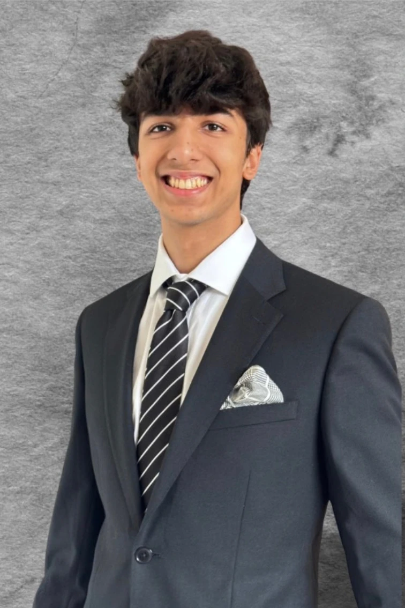
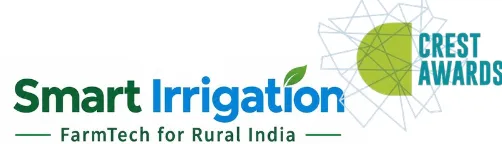
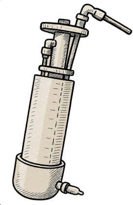
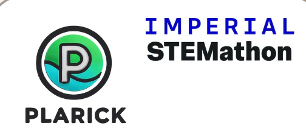
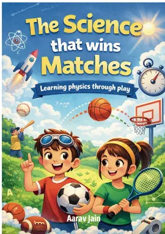
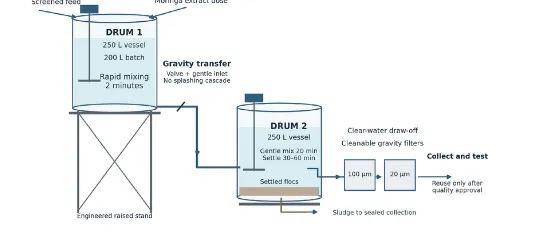

I explore how Engineering and human behaviour intersect.
How entrepreneurial pursuits can turn technical innovations into solutions for the people of our society and benefit environment.

Designed and build an affordable, automated irrigation system that intelligently dispenses water based on soil moisture levels.

Designed, built and filed for patent a portable bottle filter for arsenic, other heavy metals and turbidity from drinking water.

Transformed plastic waste into sustainable, affordable eco-friendly building material. Meeting SDG goals.

Authored a book that explains science concepts through sports.
Designed and installed a community system for removal of microplastics from water using biopolymer- MORINGA.

Research PaperBioinformatics-Guided Comparative Analysis of Moringa and Tamarind for Microplastic Removal.
Research PaperComparative Evaluation of Lead Removal from Contaminated Water by Chemical Precipitation Using Different Reagents under Varying pH and Dosage Conditions.

To flow like water…
To find a path or create it
To forge ahead
And carry along.
To affect life.
Water has been my biggest teacher.
As we live and grow, we learn about the problems of the world. And my mind immediately snaps into problem-solving mode. Then I flow from innovator to communicator, as I work with the community to understand, create, improvise and implement the solution. And then I wear the last hat - of an entrepreneur - to make the solution a feasible reality.